StackSaga Admin Dashboard
StackSaga Admin is the monitoring dashboard of the StackSaga framework. It consists of UI dashboard as well as the backend server.
Overview
In brief,The Stacksaga Admin’s features are as follows.
-
Transaction and Tracing GUI.
-
Role-based access control (RBAC).
-
User access control
User access control is provided to see the data in the dashboard.
-
Service access control
Service access control is provided for the utility services. The reason is that all the Stacksaga configured services send the instance meta data at startup time with their credentials. And also this service ' credentials are used when a user tries to access the transaction tracing details and other data that provide through the Stacksaga endpoints by the individual services.
-
-
Maintaining instance data.
-
Maintaining Aggregator and executor’s metadata. etc..
StackSaga Admin involvement in the StackSaga ecosystem.
To have a better understanding, let’s have look how the involvement of StackSaga Admin in the ecosystem.
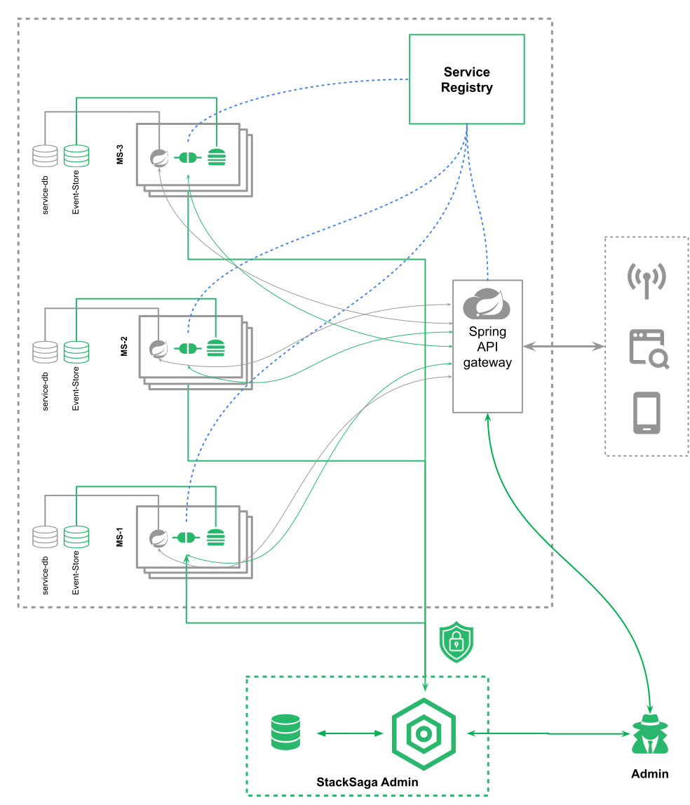
Let’s see how the user’s access control and service’s access control are used. You know that Stacksaga framework saves the transaction data on the separate databases called event store. It can either one event-store for all utility services, or most probably it could be a separate individual event-store for each utility service. These are the data that you can access through the Stacksaga admin dashboard. That means the showing data in the admin dashboard are in coming from the Stacksaga admin sever' database. To access the data from each and individual event-store Stacksaga, provides inbuilt rest endpoints internally. Then let’s see how the connection is established between the admin and available services. You know how you can access your server in the microservice architecture by using a reverse proxy server like spring cloud API gateway. As an example, if you want to access your order service, you can access it by using the api gateway like this.
-
Format: {host:port}/{service-name| URL-alias}/{rest-path}
Stacksaga also follows this way to access the target service to fetch the data from the admin dashboard with the Stacksaga in-built endpoints. As an example, If you want to see the transaction data from the order-service, you have to provide the root url and the target service.
- Format
-
-
{host:port}/{service-name| URL-alias}/{rest-path}
-
- Samples
Before accessing the transaction data in the Stacksaga-admin, you have to save your current target service by checking the validity. In the middle of the dashboard (after successfully login to the dashboard), there is a plugin icon and then a popup will be open the connectivity window like below.
Validate Your Target Service’s Connectivity
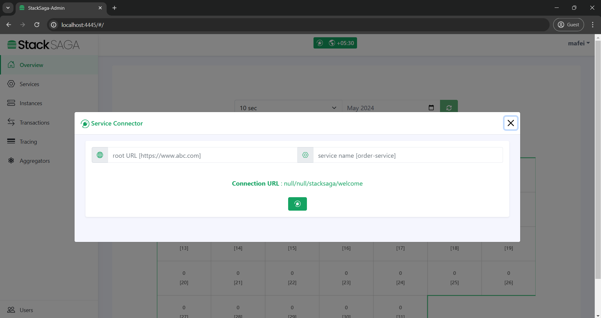
After that, you can enter the root URL of the target service is running on and enter the target service name or alias for your target service and submit like below. And then you can see a successful message if you have the authority to access the StackSaga endpoints.
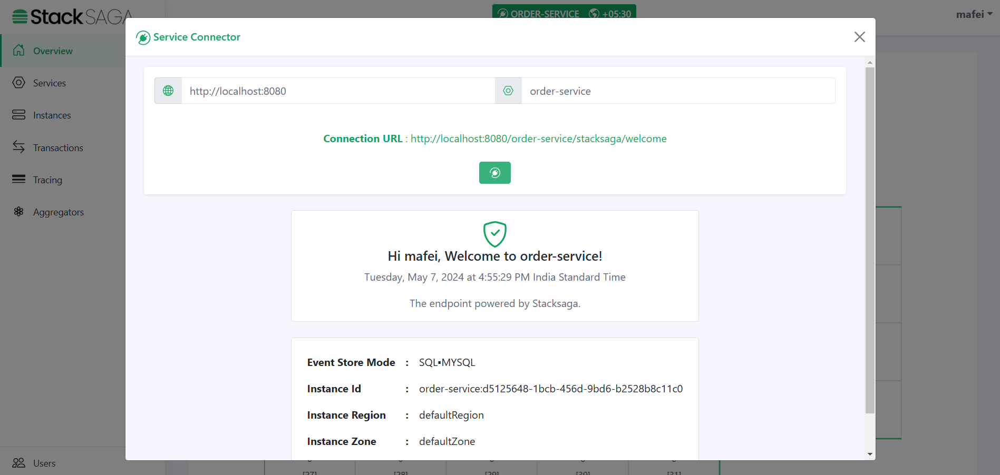
Or otherwise, you will have a 403 error like below.
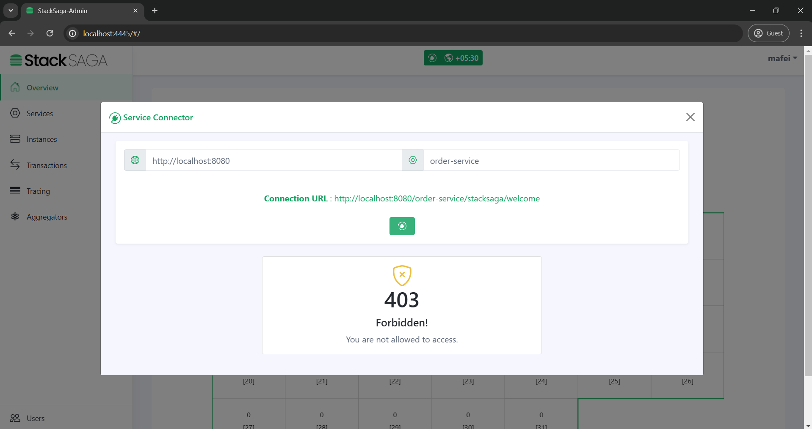
The /stacksaga/welcome endpoint is the endpoint for checking the credential.After checking the credentials, if the request is success that target service is saved as your current target service.If you want to switch to another service, again enter the target service name with root url and check the credentials.If the request is success it will be saved as the current target service.
|
If you add security in your application (for the Gateway or individual services), make sure to permit the url pattern start from /stacksaga/**.
StackSaga framework will take care of them.
|
Let’s see how the endpoints are protected in this architecture.
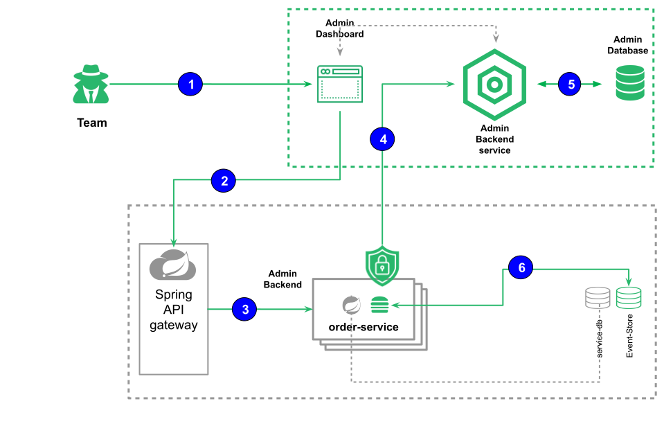
The following numbers correspond to the image.
| 1 | After successfully login to the system the user can provide the target URL and the target service (If you have an alis instead of service name, it should be provided).
|
||
| 2 | When the connect-button is clicked, the cross-border request goes to the target URL and the api gateway or any proxy server will navigate the request to one of the available instances of the target service with your user credentials that you logged to the admin dashboard. | ||
| 3 | The Proxy server forwards the request to one of the available target services. | ||
| 4 | After receiving the request in to the order service, all the requests are filtered by Stacksaga if the request has the /stacksaga/.. prefix.
If it contains, the request is caught by the Stacksaga framework and make a new request to the configured admin server with your credentials, and as we as the server’s credentials to verify both user and server has the authority to access the particular request. |
||
| 5 | Both user’s token and service-user credentials are validated. | ||
| 6 | If both credentials are valid, the Stacksaga framework grants the authority to access the event store through the Stacksaga endpoints. |
IF the request is failed due to some credential issue, tou are not able to access the data.
Role-based access control (RBAC)
| ROLE | Permissions | Type | Description |
|---|---|---|---|
SUPER_ADMIN |
- Manage Admin Users |
USER_TYPE |
The main account that creates with the server initialization. |
- Manage OPERATOR_ROLE |
USER_TYPE |
SUPER_ADMIN can create any number of ADMIN accounts. |
|
- Monitor the transactions. |
USER_TYPE |
Any ADMIN can create any number of OPERATOR accounts. |
|
- Connect Service |
APPLICATION_TYPE |
The SERVICE_ROLE type account is created for the application that you add stacksaga. It helps to protect the predefined |
| By default, super admin has an operator role as well. |
Running The Server
StackSaga Admin Jar
You can download Stacksaga Admin server executable jar in two types.
-
StackSaga Admin server jar with an embedded database. (For development)
Minimum Requirements
-
StackSaga Admin server jar without an embedded database. (For production)
Minimum Requirements
After unzipping the file, you will see the jar file.
To run the jar file, run the START.sh file or the following code below.
Before run the jar, make sure to config your custom configuration in the application-proud.properties file.
-
Run on the console*
$ java -jar stack-saga-admin-1.0-SNAPSHOT.jar --spring.config.location=file:application-proud.properties| If you have installed multiple java versions on your computer, you can directly mention the java and run the executable jar like below. |
"C:\Program Files\Java\jdk-17\bin\java.exe" -jar stacksaga-admin-1.0-SNAPSHOT.jarUpdate custom configurations
You can update your custom configurations for running the application.
To override the configuration properties, you can update your configurations in the application.properties file like below.
stacksaga.admin.security.expiration-time=60000
stacksaga.admin.security.secret=wksfgfasdfgwhjrfgkrhfsfashwewnfbcfj$244#
server.port=4444
spring.liquibase.drop-first=false
spring.datasource.url=jdbc:mysql://localhost:3306/stacksaga_admin_db
spring.datasource.username=root
spring.datasource.password=mafei
application.security.jwt.secret-key=404E635266556A586E3272357538782F413F4428472B4B6250645367566B5970
application.security.jwt.expiration=86400000
application.security.jwt.refresh-token.expiration=604800000| If you want to add more configurations regarding the database and many more, please follow the spring reference documentation. Because all other configurations will be applied according to the spring boot framework. |
StackSaga Admin Docker Image
If docker is running on your computer, you can build a container and run StackSaga server (admin) by using the docker StackSaga server (admin) docker image.
You can choose the StackSaga server wit specific database that you want. See all images on docker hub.
For instance, if you prefer to use mysql StackSaga server, you can run the code to pull the image.
docker pull stacksaga/stacksaga_admin_mysqll:latestAfter pulling the image, you can create an image, and then you have to provide the following Environment variables.
docker run -d \
-p 4444:4444 \
-e DB_URL=jdbc:mysql://localhost:3306/stacksaga_admin_db?createDatabaseIfNotExist=true \
-e DB_R2DBC_URL=r2dbc:mysql://localhost:3306/stacksaga_admin_db \
-e DB_USERNAME=root \
-e DB_PASSWORD=*** \
-e DROP_FIRST_DB=your-config \
-e SECRET=*** \
-e TOKEN_EXPIRATION_TIME=60000 \
--name stacksaga-admin-server \
stacksaga/stacksaga_admin_mysql:1.0.0Docker Image Compose
OR, if you prefer doing the deal with docker compose, here is the basic code snippet that you want to run your own container.
version: '3'
services:
stacksaga_admin_mysql:
container_name: stacksaga_admin_mysql
image: "stacksaga/stacksaga_admin_mysql:1.0.0"
ports:
- "4444:4444"
restart: always
environment:
- DB_URL=jdbc:mysql://host.docker.internal:3306/stacksaga_admin_db?createDatabaseIfNotExist=true
- DB_R2DBC_URL=r2dbc:mysql://host.docker.internal:3306/stacksaga_admin_db
- DB_USERNAME=root
- DB_PASSWORD=mafei
- DROP_FIRST_DB=true
- SECRET=c403ba24-ea8f-4285-977a-a5b6361b427a
- TOKEN_EXPIRATION_TIME=600000to run the docker-compose file, go the file directory and run this code.
docker compose upServer Initialization
Initialize Dashboard
Step-1.
After successfully running the server, Initially you can see Admin-initialization-key in the console like below.
Step-2.
Copy the key and go to the admin dashboard http://localhost:4444 and enter the code click the button Initialize the server
Step-3.
Enter the super admin details create a new Super-Admin.
Step-4.
Login with the credentials that provided.
Step-5.
Congratulations! now you have successfully finished the initialization process.
Creating User Accounts
Create Admin User
The superuser can create any number of admin accounts and the steps are as follows.
- Step-1
-
Go to the
usersmenu, and move to theregistraion taband then select the user type asROLE_ADMINand enter the name and username.
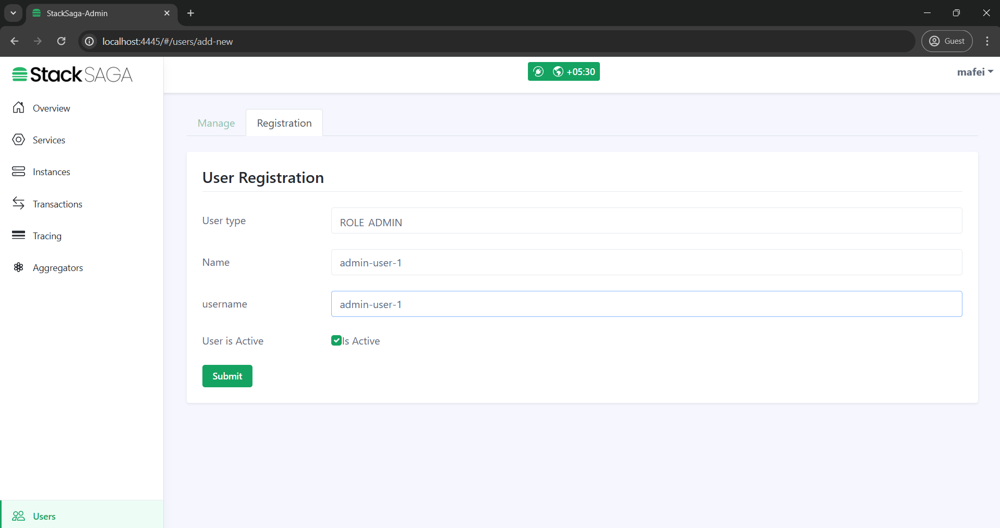
- Step-2
-
After submitting the data you will have the
usernameand a temporarygenerated password. The temporary password helps to complete the account with the real password for the real user.
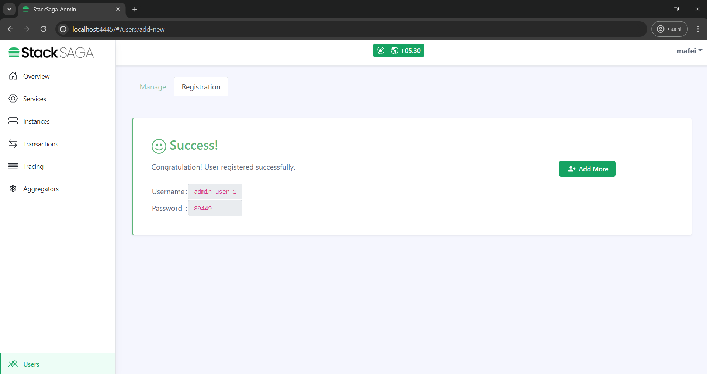
- Step-3
-
After creating the admin user account, the super admin can manage the access for services like if the new admin can access all the services or not, or it can be added to specific services one by one. As an example if you want to have an admin user for the
payment-account-serviceservice, you can mention that user can only access thepayment-account-service.
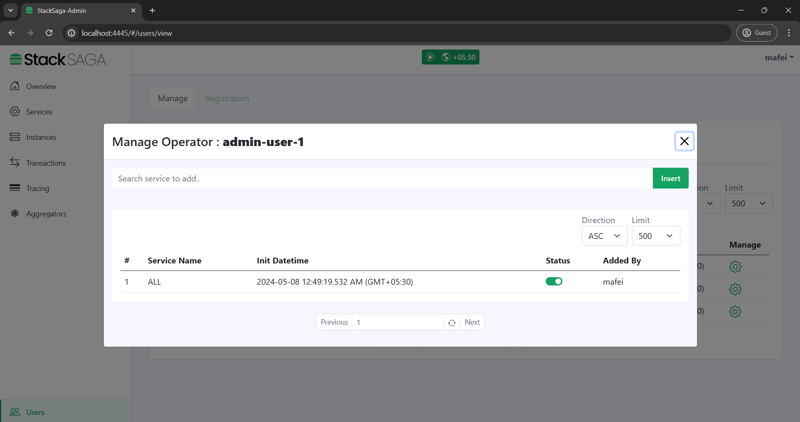
- Step-4
-
After handing over the
usernameand temporarygenerated passwordto the real admin user, he or she can log in by using it.
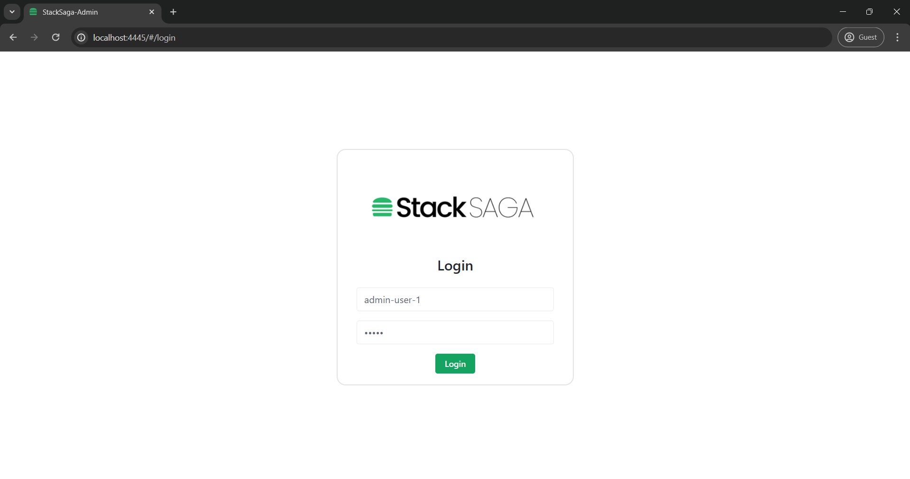
- Step-5
-
When trying to log in with the temporary
generated passwordthe user will be asked for creating a new password for activate the account. Then the real user of the admin account can give their own password and create the account.
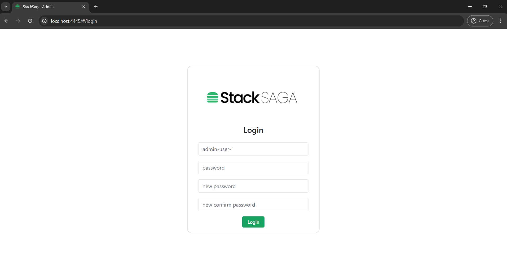
- Step-6
-
Finally, the user can see what services he can access (Because the admin account has operator access by default) and what server has been restricted to access by the super admin.
Create Operator User
Super admin user and also Admin user can create the operator accounts and the steps are as follows.
- Step-1
-
Go to the
usersmenu, and move to theregistraion taband then select the user type asROLE_OPERATORand enter the name and username. 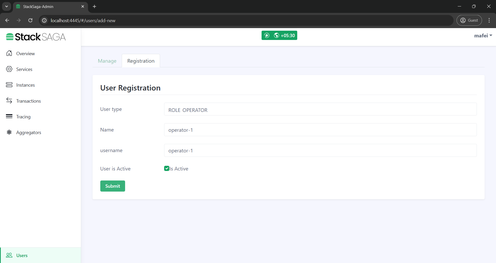 - Step-2
-
After submitting the data you will have the
usernameand a temporarygenerated password. The temporary password helps to complete the account with the real password for the real user.
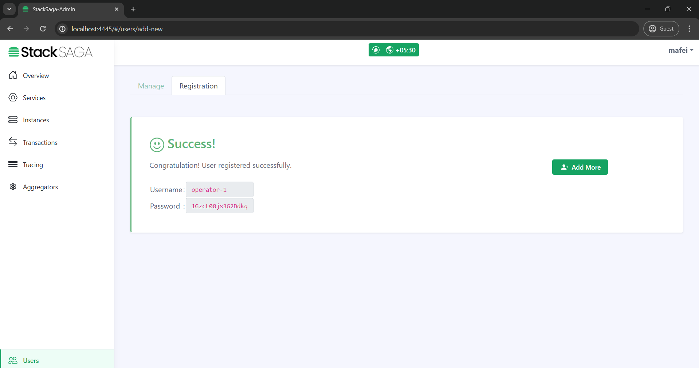
- Step-3
-
After creating the operator user account, the super admin or an admin can manage the access for services like if the new operator can access all the services or not, or it can be added to specific services one by one. As an example if you want to have an operator user for the
payment-account-serviceservice, you can mention that user can only access thepayment-account-service.
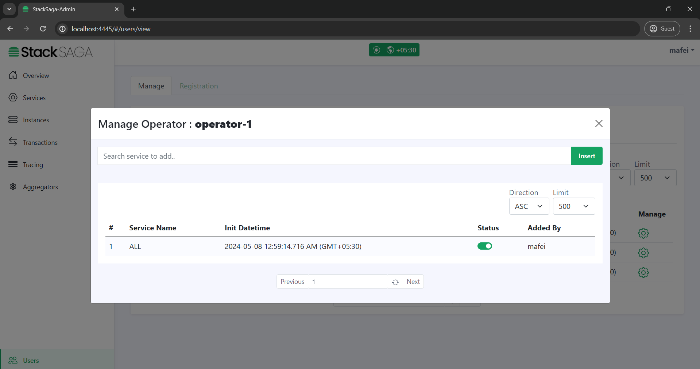
- Step-4
-
When trying to log in with the temporary
generated passwordthe user will be asked for creating a new password for activate the account. Then the real user of the admin account can give their own password and create the account.
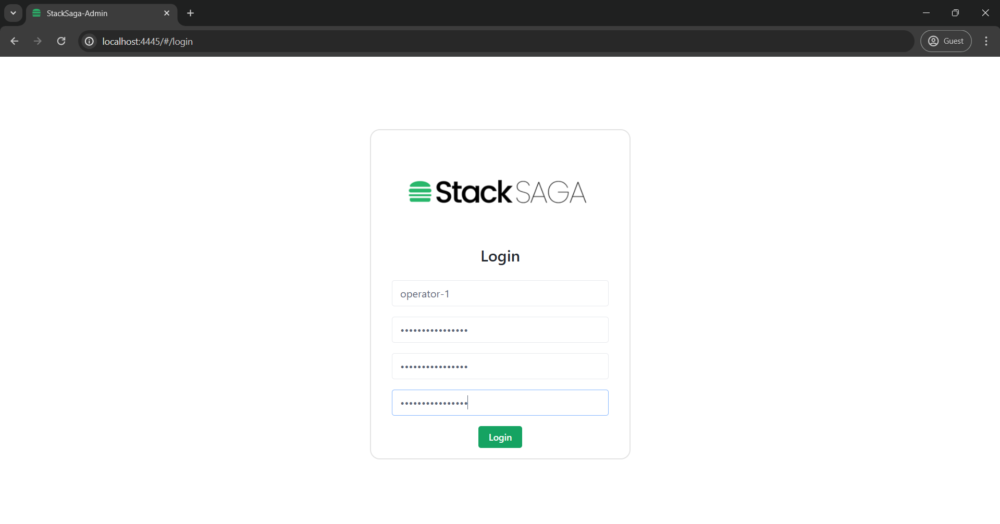
Create Service User
Any Super admin user or admin user can create a service-user-account .
The service-user-account is little bit different from other accounts.
Because other accounts are related to the user logins but the service-user-account is created for service logins (service authentication).
And also it uses Basic authentication between the utility-service and the admin-server.
- Step-1
-
Go to the
usersmenu, and move to theregistraion taband then select the user type asROLE_SERVICEand enter the username and select the primary service.
| The primary service name should be the same of your spring boot application’s name that you are going to use this credential. If the system has no the target service, you can add it as a new one by clicking the + button. |
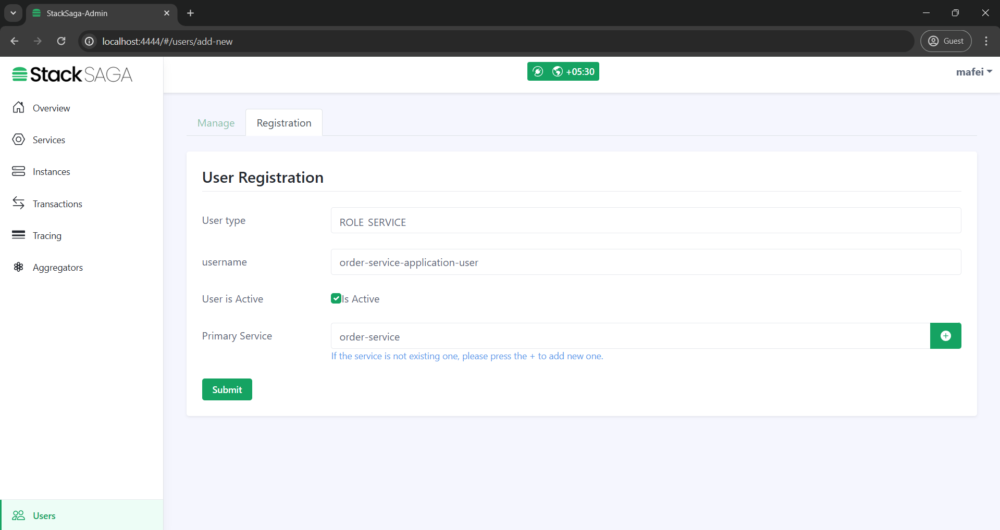
It is recommended {service-name}-application-user format for creating the service-accounts.
|
- Step-2
-
After submitting the data you will have the
usernameand agenerated password(It is not temporary password and keep it in secret). 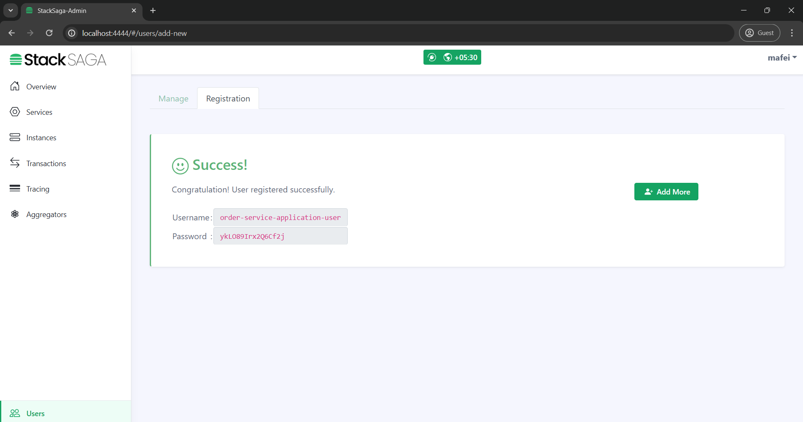 - Step-3
-
After having the credential you can use the username and the password in the property file like below. Configuration properties ]
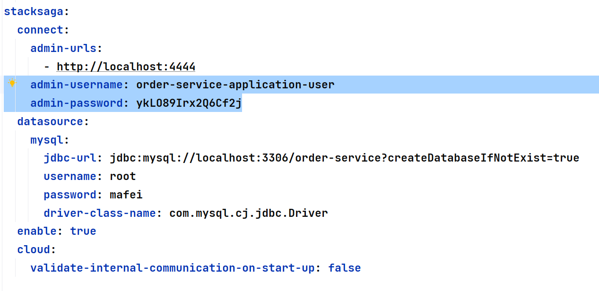
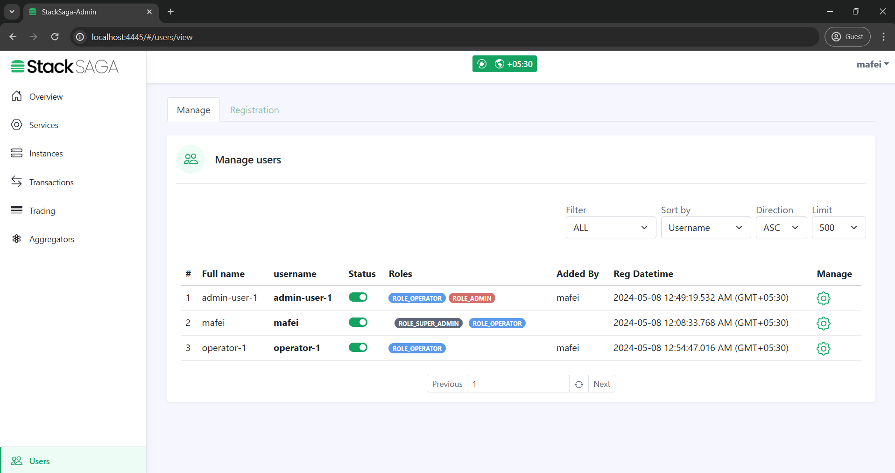